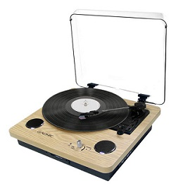

NUESTROS TOCADISCOS

Tocadisco Simil Madera Gadnic Bluetooth Puas Extras Cargador
Ha llegado el momento de volver a desempolvar sus viejas colecciones de LPs y de sumergirse en la nostalgia. El nuevo tocadiscos portátil Gadnic no sólo tiene 3 tamaños reproducibles, sino que ademas le da la posibilidad de pasar a formato digital tus discos favoritos. Gracias a su puerto USB trasero mediante el cual transmite fácilmente la señal de LP a la computadora, y al mismo tiempo el tocadiscos Gadnic se reproduce con la corriente del mismo.